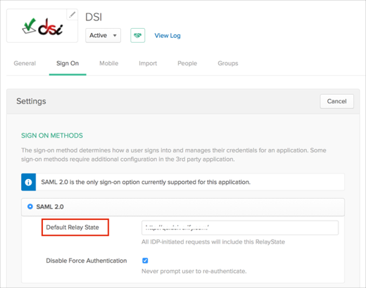
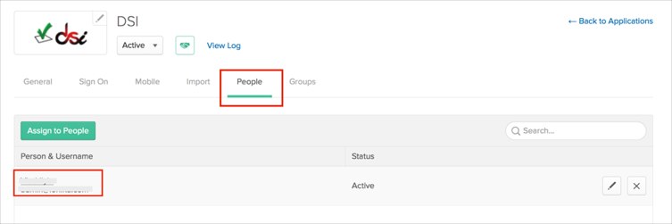
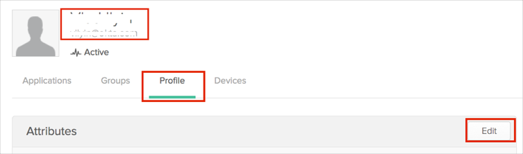
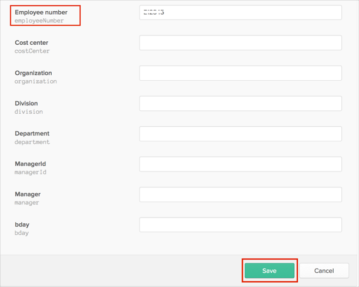

Send an email to DSI requesting that they enable SAML 2.0 for your account.
Provide the following information:
x.509 Certificate: Copy and paste the following (in PEM Text format):
Sign into the Okta Admin Dashboard to generate this variable.
Login URL/SignOn URL: Copy and paste the following:
Sign into the Okta Admin Dashboard to generate this variable.
IDP Issuer/Entity ID: Copy and paste the following:
Sign into the Okta Admin Dashboard to generate this variable.
Ask DSI to provide you with the following:
A value for Default Relay State
An Employee number.
In Okta, select the Sign On tab for the DSI app, then click Edit:
Enter the Default Relay State value provided by DSI.
Click Save.

Still in Okta, select the People tab, then click on your Username:

On your User Dashboard select the Profile tab, then click Edit:

Enter the Employee number provided by DSI.
Click Save.

Done!
Notes:
IdP-initiated flows are supported.
SP-initiated flows and Just in Time (JIT) provisioning are not supported.